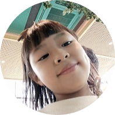

|  |
Refleksi 23 - 27 maret 2020 |
Matematika
Pendidikan Jasmani, Olah Raga dan Kesehatan
Seni Budaya
Bahasa Inggris
Bahasa Indonesia
Pendidikan Agama Islam
Ilmu Pengetahuan Alam (IPA) Science
Ilmu Pengetahuan Sosial (IPS) Social Studies